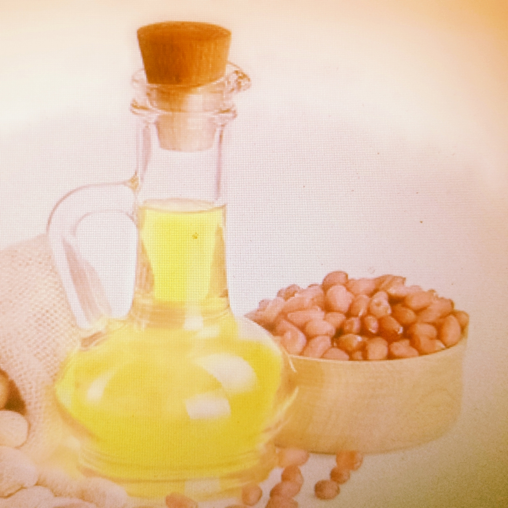

Découvrez Sunu Diw, l'innovation à son apogée
Innovation, qualité et performance pour un produit exceptionnel en 2025.
Sunu Diw est riche en vitamines, sans cholestérol, et a une durée de conservation jusqu'en 2035.
Sunu Diw, Diwou Askan Wi !
Découvrir nos produitsNotre production
Découvrez les détails de notre dernier produit révolutionnaire.
Ninal
Sunu Diw

Vinaigre du Roy
Caractéristiques
Raffinage
Le produit Sunu Diw est raffiné avec un haut niveau de qualité, garantissant son excellence.
Il est issu de végétaux naturels et suit un processus de raffinement optimal.
Vitamines
Les végétaux utilisés sont riches en vitamines A, D, E et K.
L'huile Sunu Diw est une source naturelle de vitamines liposolubles qui favorisent l'absorption des nutriments essentiels.
Qualité
Sunu Diw contient 0% de cholestérol et a une date d'expiration en 2035. Elle est conservable et résistante à toute température.